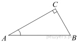

Тригонометрические функции
Задача №1
В треугольнике \(ABC\) угол \(C\) равен 90°, \(AC = 4\), \(\cos{A} = \frac{1}{2}\). Найдите \(AB\).

Решение: \(\cos{A} = \frac{AC}{AB}\), значит \(AB = \frac{AC}{\cos{A}}\).
\(\cos{A} = \frac{AC}{AB}\), значит \(AB = \frac{AC}{\cos{A}}\).
Следовательно \(AB= 4 :\frac{1}{2} = 4 \cdot 2 = 8\).
Ответ: \(AB= 8\).
Задача №2
В треугольнике \(ABC \) угол \(C\) равен 90°, \(BC = 2\), \(\cos{A} =\frac{\sqrt{17}}{17}\). Найдите \(AC\).
Решение:
\(AC=\frac{2}{4}= \frac{1}{2}\).
Ответ: \(AC=\frac{1}{2}\).
Задача №3
В треугольнике \(ABC\) угол \(C\) равен 90°, \(AC = 24\), \(BC = 7\). Найдите \(\sin A\).
Решение:
Решение:
\( \sin{A} = \frac{BC}{AB}\),
\({AB}^2= {BC}^2+{AC}^2\),
значит \({AB}^2= {7}^2+{24}^2= 625\),
\(AB= \sqrt {625}= 25\),
\( \sin{A}= \frac{7}{25}\).
Ответ: \( \sin{A}= \frac{7}{25}\).
Задача №4
В треугольнике \(ABC\) угол \(C\) равен 90°, \(AC = 8\), \(\tan{A} =\frac{1}{2}\). Найдите \(BC\).
Решение: \(tan{A}=\frac{BC}{AC}\), \(BC=\frac{1}{2}\cdot\frac{8}{1}=4\).
Ответ: \(BC=4\).
Задача №5
В треугольнике \(ABC\) угол \(C\) равен 90°, \(\sin{A} = \frac{2}{3}\). Найдите \(AC\), если \(AB = 6\sqrt{5}\).
Решение: \(\cos{A}=\frac{AC}{AB}\), \(\cos{A}=\sqrt{1-{\frac{2}{3}}^2}=\sqrt{\frac{9}{9}-\frac{4}{9}}=\sqrt {\frac{5}{9}}=\frac{ \sqrt{5}}{3}\), \(\frac{\sqrt{5}}{3}= \frac{AC}{6\sqrt{5}}\),
\(AC=\sqrt{\frac{\sqrt{5}\cdot 6 \sqrt{5}}{3}}=5\cdot 2=10\).
Ответ:\(AC=10\).
Задача №6
В треугольнике \(ABC\) угол \(C\) равен 90°, Найдите длину его гипотенузы, если \(AC = 8\), \(\cos{A} = \frac{4}{5}\).
Решение: \(\cos{A} = \frac{AC}{AB}\), следовательно \(AB=\frac{AC}{\cos{A}}\), \(AB=\frac{8}{1}\cdot\frac{5}{4}=5\cdot2=10\)
Ответ: \(AB=10\)